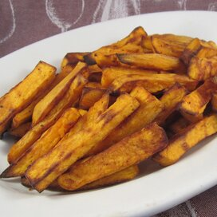

Air-Fried Sweet Potato Fries

If our last recipe was too boomer...
Just not that interested in meatballs? Well, we've got something new for ya. Traditionally,
french fries have been known to be very, very fatty. Not with air-fryers. This recipe focuses
on satiety and low levels of fat. In fact check out our ingredients list. Then, see if it
passes your personal taste-test.
Ingredients
- 1 seet potato, peeled and cut into 1/2 inch wide fries
- 1 tablespoon canola oil
- 1/2 teaspoon kosher salt
- 1/4 teaspon pepper
- 1/8 teaspoon garlic powder
- 1/8 teaspoon ground sweet paprika
Steps
- Preheat the air fryer to 400 degrees F (200 degrees C).
- Combine sweet potato fries and canola oil in a bowl and mix. Season with salt, pepper, garlic powder, and paprika. Mix until all fries are evenly coated.
- Divide sweet potatoes into 2 or 3 batches for cooking. Place an even layer of sweet potatoes in the fry basket, insert in the air fryer, and cook until golden, about 10 minutes. Repeat with remaining sweet potatoes.